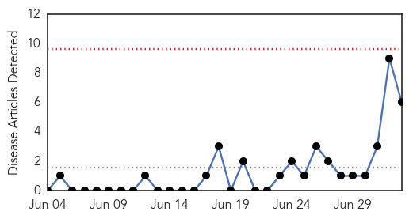
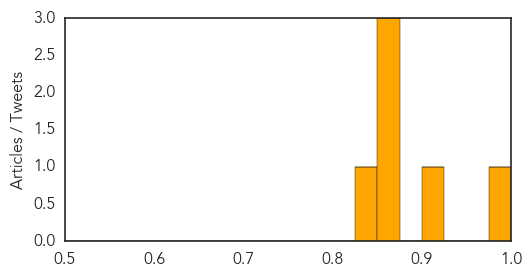

Hemmorhagic Fever
30-Day Web Trend
0 alerts, 0 warnings

30-Day Twitter Trend
0 alerts, 0 warnings

Article Locations

Article Confidences

Top Articles:
-
No articles found for Jul 03, 2014
Top Tweets:
-
No tweets found for Jul 03, 2014
Swine Flu
30-Day Web Trend
0 alerts, 0 warnings

30-Day Twitter Trend
4 alerts, 0 warnings

Article Locations
Article Confidences
Top Articles:
- 0.996
- A possible public health crisis from detention centers.
- 0.907
- Scientist creates 'invincible' strain of H1N1 flu
- 0.864
- 2 Cases of swine flu detected in immigrant children
- 0.860
- 2 Cases of swine flu detected in immigrant children
- 0.855
- Reports Show Central American Immigrant Children Show Desperate Need for Healthcare, Mental Health Treatment
- 0.847
- Two Cases of Swine Flu Detected in Immigrant Children
Top Tweets:
- 0.628
- SWINE flu is striking down 16 Tasmanians each week as the flu season hits homes and workplaces http://t.co/rk3pF2lQro via